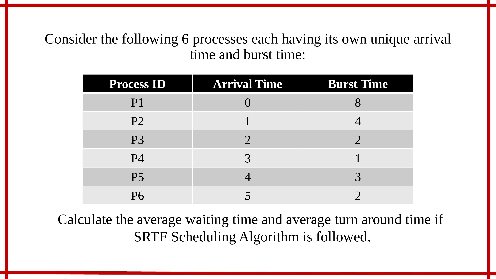

PROCESS SCHEDULING
Experiment Number 6 : Shortest Remaining Time First
To view Simulator, Click Here
Software
System Requirements : Chrome Web Browser
Windows :
Download jar file from the link provided above and run it directly.
Linux :
Command line to download Chrome Web Browser :
sudo apt-get install chromium-browser
Command line to run jar file :
java -jar (filename).jar
Steps to use Simulator :
Consider the following example :

Step 1 : Download the jar file of the simulator from the link given above.
Step 2 : Once the jar file gets downloaded click to open it. The following window will appear.

Step 3 : This window contains many other sections which are Data, Job Pool, CPU, Ready Queue, Average(in sec) and Gantt Chart. They have their functionalities which will be discussed in next steps.
Step 4 : If user just wants to see the working of simulation, some of the inbuilt examples are already visible on the Job Pool table in the same window.

Step 5 : If the user wants to add his/her own data then click on "File" and then click on "Add my data" option in the header bar of the simulation.

Step 6 : When the user clicks on add my data, a new window appears with the help of which new entries for desired process can be added.

Step 7 : Now as our process starts from 0 second, insert these values one by one in the space provided.
Processes will get priorities as per the algorithm. So Process ID 1 will get priority 1 and so on.

Step 8 : The data entered in table is then displayed in Job Pool.

Step 9 : Now we have to fill the required Data from Data section.

Dropdowns and Buttons are :
Num of Jobs : It is used to select the default number of jobs when input is not provided.User can select from 2 to 8 processes. It reflects in the Job Pool.
Algorithm : To select which Algorithm needs to be used (FCFS, SJF, Round Robin, Preemptive Priority, Non-Preemptive Priority, SRTF).
Sim Speed : To set simulation speed (Generally advisable to set it at 2 sec).
Quantum : Set to 2 by default.
Simulate : To start the simulation.
Next Step : To display simulation in Gantt Chart section step by step.
Restart : To restart the entire simulation.
Start another simulation : To start new simulation.
Finish : To display entire simulation of Gantt Chart in Gantt Chart section at once.
Step 10 : Simulation is shown in the Gantt Chart window as follows with respective Process ID written on them which is given in Job Pool.

Step 11 : This CPU window shows the Current Job at each step. It also shows Current Time from which second to which second is the CPU performing the task given and also the Utilization of the CPU in percentage.
Step 12 : The Ready Queue window shows the upcoming processes with their respective process id written on them.

Step 13 : The average waiting time and average turnaround time in seconds is shown in the following window.

# Priority for different scheduling algorithms is as follows:
In FCFS, ascending order with respect to arrival time.
In SJF, the arrival time 0 will have first priority and then give priority according to the burst time in ascending order. Less burst time, high priority.
In Round Robin, arrival time in ascending order.
Priorities in case of Preemptive Scheduling and Non-Preemptive Scheduling will be given in the question itself.
Step 7 : Now as our process starts from 0 second, insert these values one by one in the space provided. Processes will get priorities as per the algorithm. So Process ID 1 will get priority 1 and so on.
Step 8 : The data entered in table is then displayed in Job Pool.
Step 9 : Now we have to fill the required Data from Data section.
Dropdowns and Buttons are :
Num of Jobs : It is used to select the default number of jobs when input is not provided.User can select from 2 to 8 processes. It reflects in the Job Pool.
Algorithm : To select which Algorithm needs to be used (FCFS, SJF, Round Robin, Preemptive Priority, Non-Preemptive Priority, SRTF).
Sim Speed : To set simulation speed (Generally advisable to set it at 2 sec).
Quantum : Set to 2 by default.
Simulate : To start the simulation.
Next Step : To display simulation in Gantt Chart section step by step.
Restart : To restart the entire simulation.
Start another simulation : To start new simulation.
Finish : To display entire simulation of Gantt Chart in Gantt Chart section at once.
Step 10 : Simulation is shown in the Gantt Chart window as follows with respective Process ID written on them which is given in Job Pool.
Step 11 : This CPU window shows the Current Job at each step. It also shows Current Time from which second to which second is the CPU performing the task given and also the Utilization of the CPU in percentage.
Step 12 : The Ready Queue window shows the upcoming processes with their respective process id written on them.
Step 13 : The average waiting time and average turnaround time in seconds is shown in the following window.